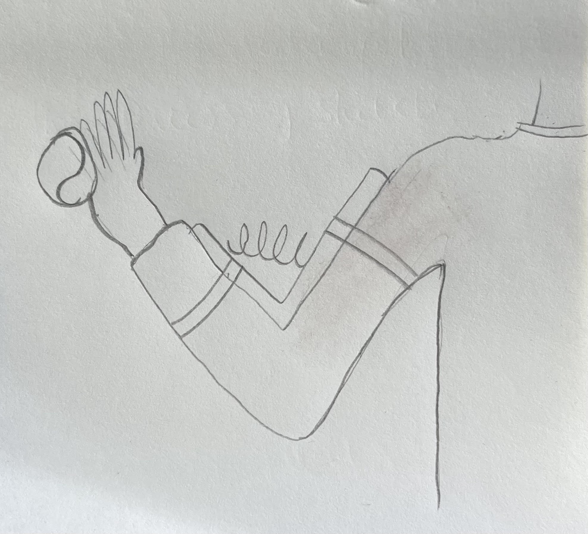

Chindogu aren't useful. But they aren't completely useless either. Their creator, Kenji Kawakami, describes them as "un-useless." Chindougu 珍道具ちんどうぐ is made up of two words. Chin 珍ちん means "curious" or "strange." Dougu 道具どうぐ means "tool" or "device."
24/04: CHINDOGU
1. CHINDOGU MUST BE (ALMOST) COMPLETELY USELESS
This is the utmost tenet. If your invention is a real help and you use it all the time, it's not chindogu. Try selling it to the public because it could be worth millions. Too bad it has no soul.
2. CHINDOGU MUST EXIST
Chindogu have to be made. If you design the invention on paper and don't make it, it doesn't qualify. It's a piece of paper with a bad invention on it. Bring the invention into the physical world so humankind can experience how truly almost useless it is.
3. CHINDOGU REPRESENT FREEDOM OF THOUGHT AND ACTION
Chindogu are free to be what they need to be. Normal devices are designed for efficiency, ease of use, and utility.
4. CHINDOGU'S USELESSNESS MUST BE UNDERSTOOD BY ALL
If you create a device that is only recognized as useless by people with certain knowledge sets (doctors, mechanics, biologists, etc.) then it is not chindogu.
For example, if you make a useless invention intended to help with space shuttle operations, it would take a rocket scientist to distinguish it from useful space tools. Normal people must be able to recognize the uselessness immediately.
5. CHINDOGU ARE NOT FOR SALE
If you accept money for your invention, it ceases to be chindogu. You have violated its spirit.
6. HUMOR MUST NOT BE THE SOLE REASON FOR MAKING CHINDOGU
Any humor derived from chindogu is a side effect. The invention must earnestly try and solve a problem. The roundabout and unconventional way it solves the problem is the source of the humor.
7. CHINDOGU ARE NOT PROPAGANDA
They are made to be used, even though they are (almost) useless. They are not, in and of themselves, a statement for any cause or philosophy.
8. CHINDOGU ARE NEVER TABOO
Chindogu inventions cannot be made to enact or represent cheap sexual innuendo, vulgar humor, or sick jokes that disrespect living things.
9. CHINDOGU CANNOT BE PATENTED
The invention must remain in the public domain. It must be free to use, re-create, and distribute. It cannot be copyrighted or owned.
10. CHINDOGU ARE WITHOUT PREJUDICE
Chindogu view all human beings as equal. Therefore, they can't favor a race, religion, age group, gender, or class.
My Chindogu: dog ball thrower
